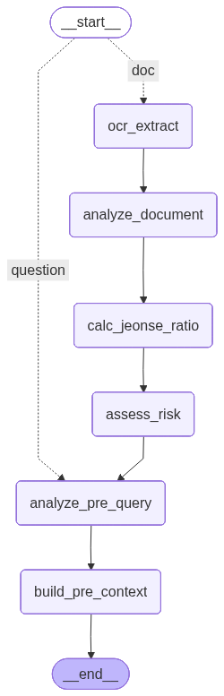

pre 서브그래프 & 품질 루프

🧮 결정론 노드 — 수치 환각 차단
calc_jeonse_ratio = (보증금+선순위채권) / 매매시세assess_risk = 임계값 판정 (≥0.8 위험 / ≥0.7 경계)LLM이 아닌 코드가 계산
grade 결정론 게이트
LLM 호출 없이 유사도 판정 (top-1 ≥0.45 충분 / <0.35 재작성) — 지연·비용 0
재검색 누적 병합
재작성 검색 결과를 교체가 아닌 병합 → recall 상승
verify 환각 검증
답변이 검색 근거+업로드 서류에 충실한지 LLM 검증, 불충실 시 재생성
캐시 최적화
쿼리 임베딩 lru_cache + 동일 쿼리 재검색 스킵